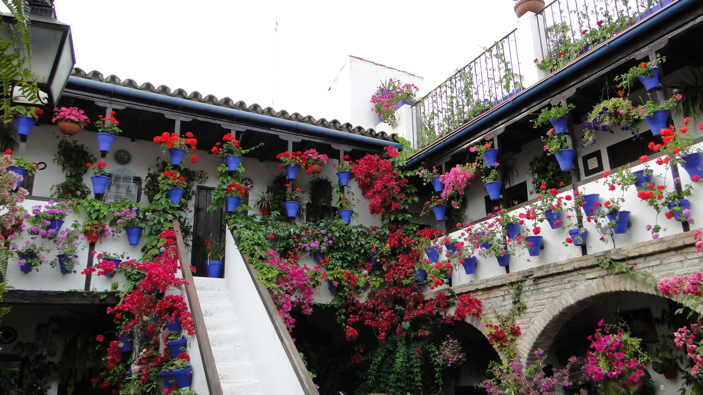

Los patios de Córdoba

Denominación
El patio cordobés es un elemento característico de la ciudad andaluza de Córdoba, España, y desde el año 1921 se magnifican con el famoso Festival de los Patios Cordobeses, declarado en 2012 Patrimonio de la Humanidad, cuya visita turística hacen que esta fama crezca en el exterior.
En el interior no cabe pensar en una casa que no tenga un patio; lo demás son pisos o chalets. La colección de patios, desde el patio de la Mezquita-Catedral hasta patios minúsculos, es tan amplia que dificulta su catalogación. Los límites los marcan las designaciones de corral, "patinete" o patio de luces, huerto, parque o jardín.1
Los denominados Patios de Córdoba se encuentran principalmente en el barrio de San Basilio. También los encontramos en los barrios de Santa Marina, San Lorenzo, la Magdalena y en la Judería de la ciudad. Además, el palacio de Viana alberga doce patios en su interior.
Descripción
Tratando de establecer una tipología, existen patios de planta más o menos cuadrada con arquerías en dos plantas y en los cuatro lados; con arquerías en tres, dos y uno de sus lados. Combinemos esta variedad con plantas altas con galerías de arquería, murales con balcones, adinteladas con madera y barandillas, de balaustres o petos tabicados, con galerías altas de cierres de madera o sin galerías altas. En las galerías bajas los hay sin arcos, con puertas y ventanas, con pilares en lugar de columnas, con pies derechos de hierro, fundición, madera o sin soportes, estando empotradas en los muros limítrofes las vigas que cargan las galerías. Hay patios que no tienen galerías y son simplemente limitados por muros en dos o una planta. Los hay alargados, irregulares, encadenados y con cada cara de una clase.
Por otro lado sus suelos son terrizos, empedrados, enlosados de hidráulica, de ladrillo o de mármol. Los hay con arriates y sin ellos, con fuente o pozo, o rara vez sin ninguna de las dos cosas; con árboles o con macetas, y algunos sin plantas, que son rarísimos y que no debían ser considerados.
Hay patios desde el siglo X al XX. La mayoría son particulares o privados; otros colectivos, corrales o casas de vecinos; otros son patios de edificios públicos, palaciegos o conventuales, compases, patios de recibo y hasta plazoletas que parecen patios; hay recintos que siguen siendo patios aunque se llamen cines de verano.
Si tuviésemos que aventurar lo que define el patio cordobés frente a otros patios andaluces, marroquíes, castellanos, canarios, italianos, yugoslavos, hispanoamericanos, portugueses, egipcios, hindúes, chinos o japoneses, sería muy difícil, porque las diferencias con los primeros son pequeñas, y con los siguientes las marcaría el estilo arquitectónico si lo hubiera, la flora tal vez, pero nos podrían confundir algunos ejemplos.